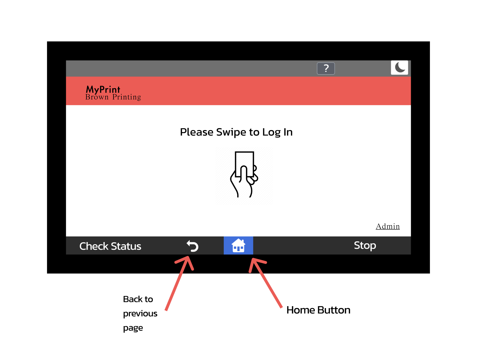
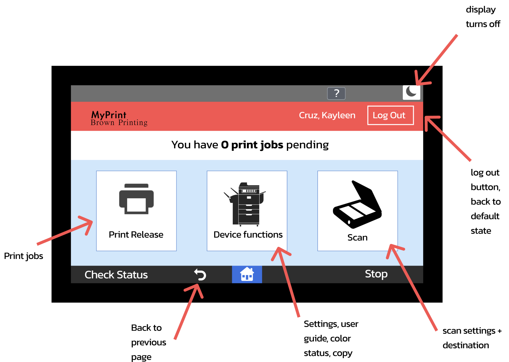
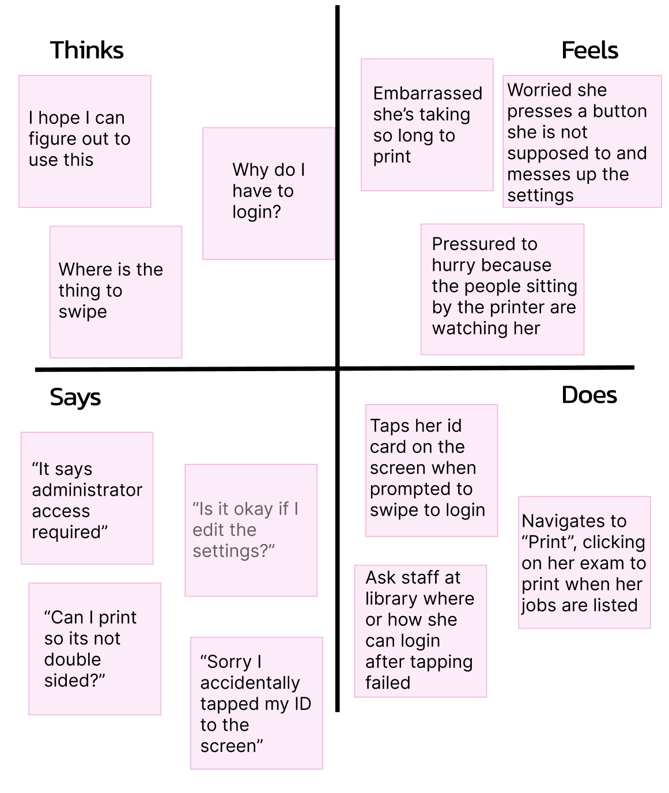
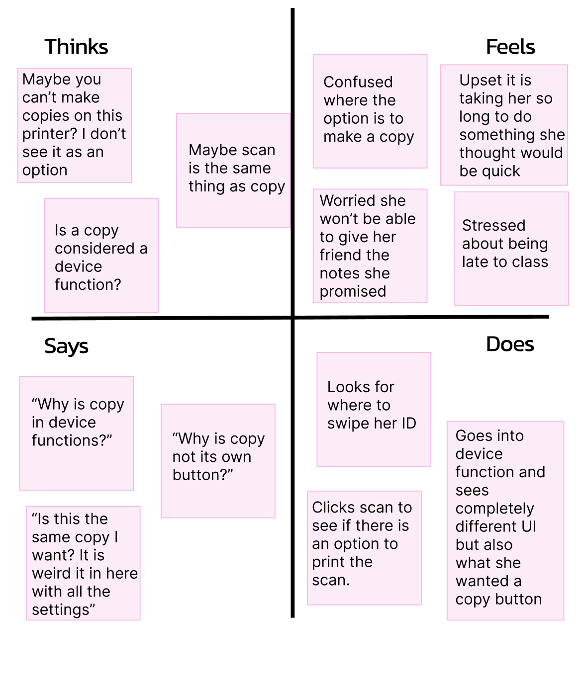
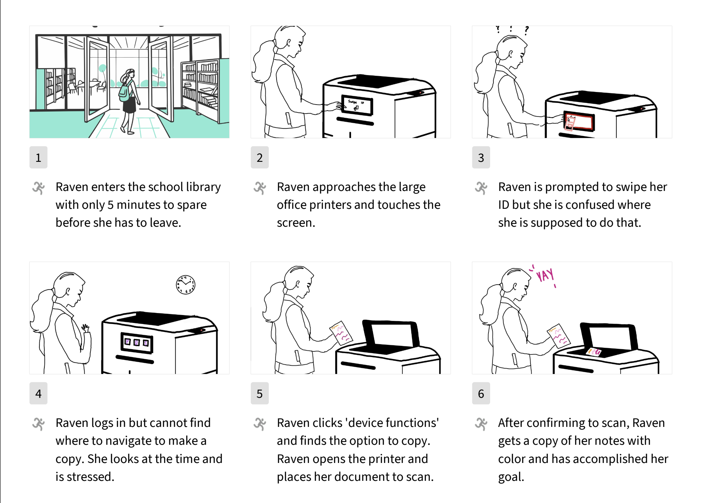

Type
Self Initiated
Role
UX Designer
Tools
Illustrating user needs and experiences through user interviews, personas, and storyboards to guide empathetic, user-centered product design.
My goal this week was to understand the user journey and illustrate their needs. I did this by making real-life observations and then conduct interviews to understand how a user interacts with a product. My interface of choice were the printers at Brown. I oberserved how people interacted with them at the library and conducted 3 interviews.
Brown University printers all have a touch screen display in front of of the printers which support both printing and scanning. Interacting with this display is necessary to complete any task on the printer. Below are rough illustrations of the interface and buttons it has.
Initial Screen - Login

Screen after signing in

Interview Questions
Interview Results
I interviewed 3 users after closely observing them interact with the printer interface. The users were all students. Below are notes of my observations as well as a summary of the user responses.
Using my observations and the responses from the interviews, I created two personas by creating an empathy map. For each archtypcal character, I described what they might think, feel, say, and do.
Meet Persona 1: Rebecca
Rebecca is a first-year student who is trying to print her practice exam. She managed to queue her PDF to print and is now going to use the printer at the Rock for the first time. She has in the past struggled to use other printers.

Most of the users I observed were there to print something that they had already put on queue on their Myprint account. Some users were in/out quickly while others did take longer and seeminly read the screen for a long time before the printer started printing. Rebecca represents one of the many people who are nervous to print because they are worried they don't know how.
Meet Persona 2: Raven
Raven is a 3rd-year at Brown and wants to make a physical copy of her notes to give to her friend. Her notes are very colorful, so it is important to her that the printed version reflects that. She has class in 10 minutes but is confident she will be out quickly because she frequently makes copies at home, and it is super quick. It is her first time trying to make a copy with a Brown printer, however.

Raven represents a user who does know how to use a printer well and is confident in their abilities. Even if one knows how to navigate a printer however, navigating a printer =/ navigating Brown's printer interface and thus, unfamilarities may still arise.
To further illustrate the needs of the users, I created a storyboard for one of the personas I created: Raven. The storyboard is meant to show Raven's user story from start to end emphasizing her goal.

I learned how to translate real-world user research into structured design insights by developing personas and end-to-end storyboards. This process strengthened my ability to identify user pain points, synthesize patterns from qualitative data, and communicate user needs clearly—skills that inform better product decisions as an engineer.